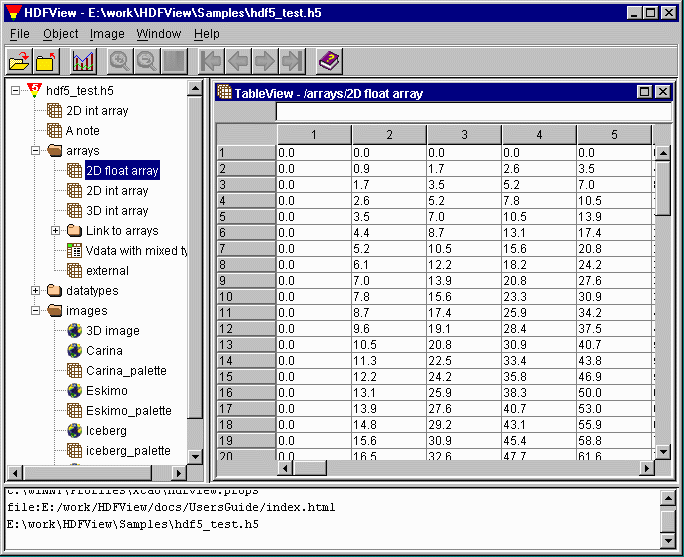
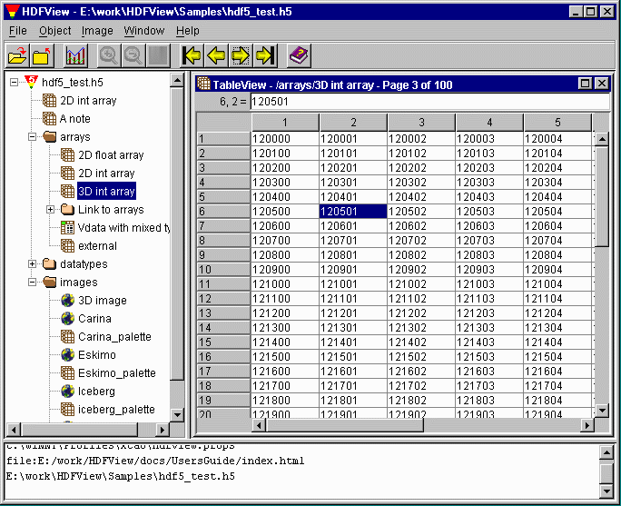
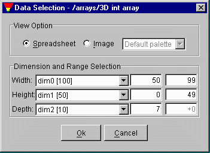
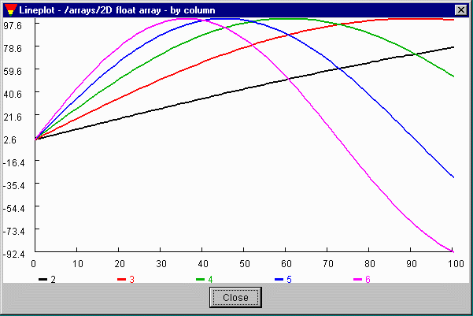

A dataset with three or more than three dimensions can be only shown two dimensions a time. You can select any two dimensions of the dataset to display and a third dimension to flip the two dimension table along that dimension.
HDFView displays numerical datasets in a "spreadsheet", which shows the data values in a grid. A one-dimensional dataset is displayed as one column and number of rows of dimension size. A two-dimensional dataset is displayed as number of columns of the first dimension size and number of rows of the second dimension size, i.e. dim[0]=height and dim[1]=width by default. You can change the order of the dimensions using "Open As" command.

Figure 5.1 Spreadsheet with 2D dataset
To flip a data sheet of a 3D dataset, you can use the "First", "Previous", "Next" or "Last" command on the tool bar.
For datasets with more than three dimensions, the first three dimensions are displayed by default, i.e. dim[rank-3], dim[rank-2] and dim[rank-1] by default.
The following shows a 3D integer dataset with size of 100 x 50 x 10. The spreadsheet displays the dataset as 100 spreadsheets with 10 columns and 50 rows each. The current page number, 6, shows at the status bar.

Figure 5.2 Spreadsheet with 3D dataset.
Opening an entire large dataset may cause an out of memory error, because the Java Virtual Machine cannot create the required objects. HDFView provides options to select a subset of a dataset for display. You can also select dimensions and order of dimension to display, e.g., to switch the columns and rows.
To make a selection, select a dataset from the tree and choose "Open As" command from the Object menu or the popup menu. The selection dialog appears. Figure 5.3 shows that a subset of dim[0]=[50, 99], dim[1]=[0, 49] and dim[2]=[7, 7] is selected inclusively. The dimension order is selected by dim[2]=depth, dim[1]=height and dim[0]=width.

Figure 5.3 Selection of Dataset.
The order of the dimensions can be changed, for example to make dim[0] the horizontal and dim[1] the vertical. When this is selected, the data will be reordered in memory, and displayed in the new layout. Users should be cautioned that this operation may consume a lot of memory.
By default, a scalar dataset is displayed in a Spreadsheet. You can also display a dataset as an image. To display a dataset in image, click the check box of image in the selection dialog and select a predefined color table the the dataset.
This operation takes the data values of the dataset as values of an indexed array, i.e., as indexes into a palette. The default palette will be used to create the image from the dataset if it does not have an attached palette. If the data values are not integers or have a range outside 0 to 255, they are binned into 256 equally spaced intervals.
The follow figure shows that data of five columns are displayed in five lines of different colors. The horizontal labels are the row index of the 100 data points. The vertical labels are the ten points of equal data range with the maximum and minimum of the column data. The line legend is drawn at the bottom of the line plot with column names and line colors.

Figure 5.4 Line Plot.
Updated 3/25/2002